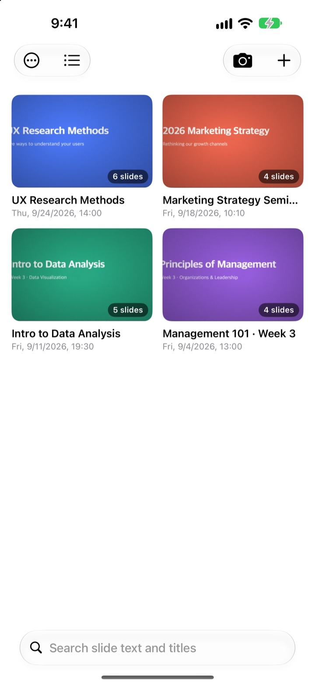
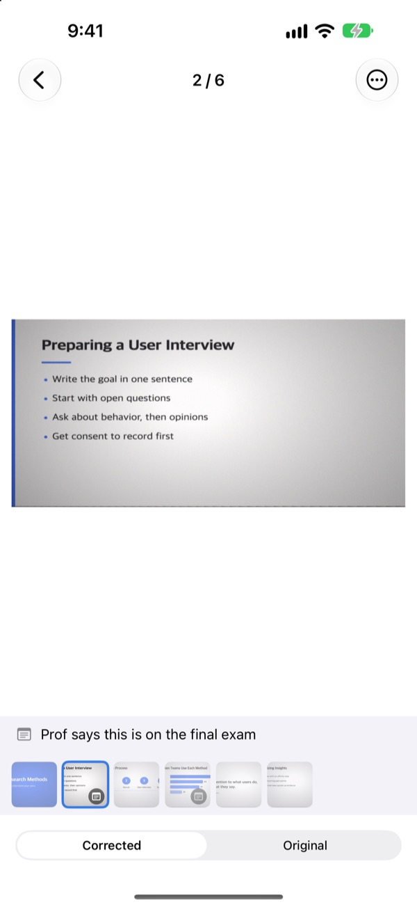
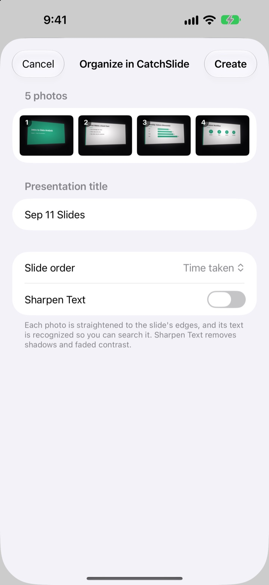
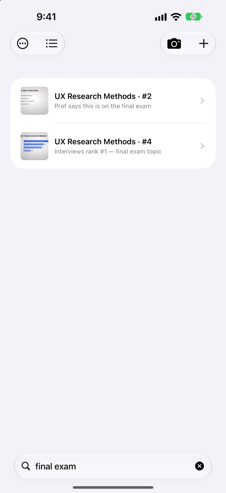

Shot from the side.
Saved head-on.
The camera finds all four corners of the slide, straightens it and crops away the room. Slides you shoot in a row land in the same presentation.
One purchase, every feature. No subscription, no account.

Straighten one yourself
This photo was taken at an angle from a side seat. The green outline is where the slide's corners were found.
Ever opened your camera roll to revise and couldn't find the slide?
Slides shot from the back row come out skewed, then get buried between selfies and receipts. In a quiet lecture hall, the shutter sound alone makes you hesitate. CatchSlide shoots silently, straightens every slide and keeps each talk together as one presentation.
Straight the moment you shoot
The camera tracks the slide's four corners live and turns green when it has them. Even at an angle, the slide is flattened as if shot head-on, with the background cropped away.
No shutter sound. Turn on Auto Capture and it grabs each new slide as the speaker moves on, skipping shots that came out blurry.

Photos you already took, all at once
Pick a batch of lecture photos in the Photos app and share them to CatchSlide. They're straightened and filed as one presentation, in the order you took them.
Turn on Sharpen Text to clear away shadows and washed-out contrast.

Find it with the one word you remember
CatchSlide reads the text on every slide, right on your device. Weeks later, a single word brings that slide back.
Notes you add to a slide are searchable too. Tag a few with exam and the whole syllabus for the test is one search away.

Three steps to start
- 1
Open the camera
From the camera button, the Home Screen widget or the Lock Screen.
- 2
Frame the slide
When the corners turn green, tap the shutter or let auto capture do it.
- 3
Come back to it later
Search, add notes and export a PDF to revise from.
What you can do with a presentation
- Recording
- Record while you shoot, then play each slide from the moment you captured it
- Transcription
- Turns the recording into text, shows what was said on each slide and makes it searchable
- AI summary
- Summarizes the presentation from slide text and transcripts (iOS 26 or later on devices that support Apple Intelligence)
- Revision handouts with one, two or four slides per page
- Markdown
- A .zip ready for Notion or Obsidian
- PowerPoint
- Exports a .pptx with the transcript in the speaker notes
- Merge
- Select several presentations and join them into one
- iCloud sync
- Turn it on to see your presentations on your other devices with the same Apple ID. Off by default
- Widgets
- Open the camera straight from the Home Screen or Lock Screen
Text recognition, transcription and AI summaries all run on your device.
Buy once, get everything
CatchSlide
- Silent shooting, auto capture and straightening
- Import a batch of photos from the Photos app
- Slides filed by presentation, with text and note search
- Recording, transcription and AI summaries
- PDF, Markdown and PowerPoint export
- iCloud sync and widgets
Tips (optional)
- If the app helps you, you can send the developer a small tip
- Tips don't unlock anything. Every feature works without one
Find it on the My Info screen.
No subscription and no paid add-ons. See the App Store for the price in your country.
Questions
How do I capture a slide?
Open the camera and frame the slide. When the corners turn green, tap the shutter. With auto capture on, it takes the next slide on its own each time the slide changes.
Does it make a shutter sound?
No. It saves the frame straight from the camera view, so it's silent in every country.
Why are my shots grouped into one presentation?
If you take the next shot within 5 minutes of the last one, it's treated as the same presentation. Tap a title in the list to rename it, and use Merge Presentations to join ones that were split up.
Can I add photos I already took?
Yes. Select photos in the Photos app and share them to CatchSlide, or tap ＋ in the list and choose Import from Photos. They're straightened and filed as one presentation in the order you took them.
The corners were detected wrong.
Open the slide, then choose Adjust Corners from the ⋯ menu and drag the four corners into place. Auto Detect finds them again, and Full Image uses the whole photo. The original is always kept, so you can redo it anytime.
Can I search the text on my slides?
Type a word in the search field at the top of the list. It searches slide text, presentation titles, notes and transcripts, and jumps straight to the slide. Text recognition happens on your device.
How do I export a PDF?
In a presentation, open the share menu, choose Export as PDF and pick one, two or four slides per page. Save it to Files or send it to another app from the share sheet.
How do I reorder or delete slides?
In a presentation, press and hold a slide and drag it to reorder. The same long-press menu lets you delete or share one slide, and Select lets you delete several at once.
How do recording and AI summaries work?
Turn on Record at the top of the camera and each slide keeps the audio from that moment. In Deck Notes, Summarize with AI writes a summary from the slide text and transcripts. AI summaries need iOS 26 or later on a device that supports Apple Intelligence.
Where are my slides and recordings stored?
On your device. They go to your own iCloud only if you turn on Sync in My Info, and no account is needed. See the Privacy Policy for details.
Questions, bug reports or ideas? Write to leeo@kakao.com.